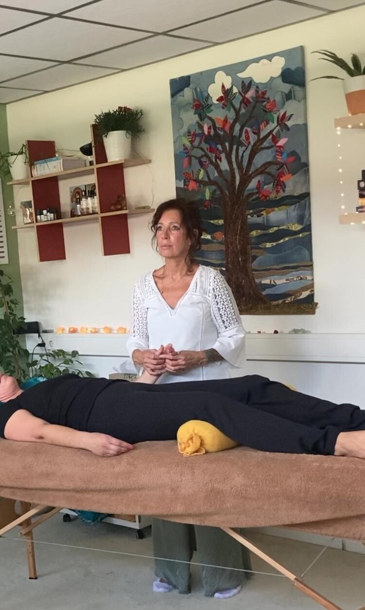
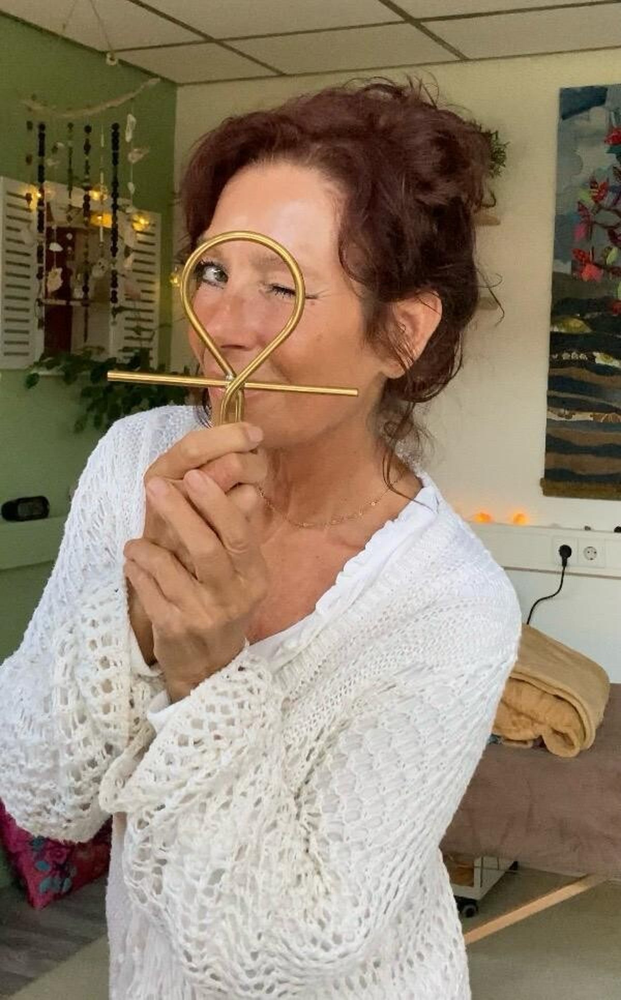

Kom uit de overleefstand en breng je systeem tot rust.
Energetisch & holistische therapie door iemand die uit ervaring wéet wat je doormaakt.
Stuur een appje voor een plekje
Herken je dat gevoel van constant ‘aan’ staan?
- Je zit veel in je hoofd en komt moeilijk tot rust
- Je voelt spanning in je lichaam (nek, schouders, buik, heupen)
- Je loopt steeds tegen dezelfde patronen aan
- Je cijfert jezelf weg en zet anderen op de eerste plek
- Je zoekt rust en duidelijkheid, maar komt er zelf niet uit
Aanbod
We vinden de ingang die bij jou past.
Voor de fysieke reset en een kalm zenuwstelsel. We ontladen opgeslagen spanning direct in de wervelkolom en het zenuwstelsel.
Onbewuste patronen doorbreken bij de kern, niet alleen mentaal maar ook via het zenuwstelsel.
Diepe ontspanning en het opruimen van energetische ruis. Je levensenergie weer in beweging.
Één sessie opent de deur, herhaling verandert je leven. Voor een werkelijke reset is herhaling essentieel.
Een krachtige energie-reset in groepsverband. Zie Agenda voor de eerstvolgende sessie.

Alles wat ik meemaakte, werkt nu vóór me.
Ik ben half Egyptisch, hoog-gevoelig, hoog-sensitief én stevig gegrond. Mijn reis begon niet vanuit licht, maar vanuit overleving. Na 25 jaar zoeken, proberen, vallen en weer opstaan, viel alles op zijn plek, niet door één methode, maar door de combinatie van verschillende behandelingen die de kern aanpakken.
“Mijn missie is jouw zelfhelend vermogen liefdevol te activeren.”
Stuur een appjeAgenda
Eerstvolgende groepssessies en een plek voor een kennismaking.
“Vanaf de eerste behandelingen merkte ik al verschil. Niet alleen voelde mijn lichaam beter aan, ik zag ook daadwerkelijk verandering in mijn scoliose.”
“Tijdens en na mijn eerste behandeling voelde ik al vanalles veranderen. Mijn benen voelde ontspannen en ik sta steviger op mijn benen.”
“Mijn zenuwstelsel is tot rust gekomen, ik kan weer ‘voelen’ vanuit mijn hart, en ik ben van de pijnklachten in mijn heup af.”
“De dag erna voelde ik, voor het eerst in jaren, geen spanning meer in mijn kaken.”
Je bent van harte welkom.
Rembrandtstraat 3, Oud-Beijerland. Gratis parkeren in de straat, loopafstand van de bushalte.
Stuur een appje voor een plekje